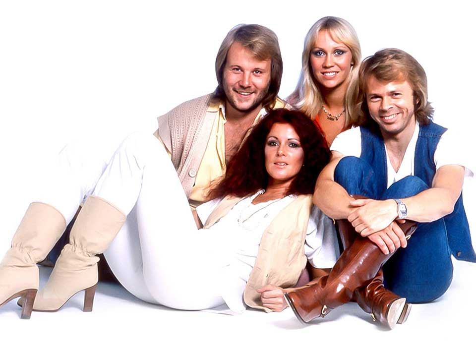

GALLERY

Waterloo 1974
"Waterloo" is the first single from ABBA's second album.
Dancing Queen 1976
On the night they first performed ‘Dancing Queen'
ABBA: The Movie 1977
In a promotional still from
'ABBA: The MovieI have a dream 1979
It was featured on side one of the group's sixth studio album.
Chiquitita 1979
With the success of the English version, ABBA also recorded "Chiquitita" in Spanish.
- 
Winner takes it all 1980
It was recorded the same year that she and Ulvaeus divorced.
Super Trouper 1980
The music video for "Super Trouper" used the largest number of artists that ABBA ever used in a music video.
Past & Present 2016
Since 2016, they have been showing signs of a reunion.
Click the images